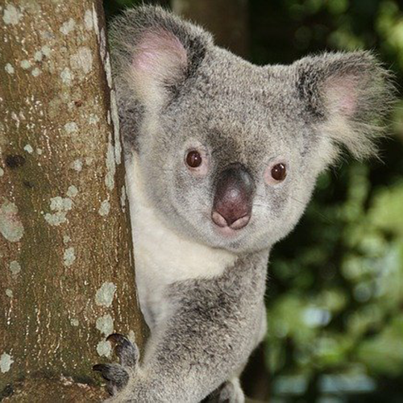

Welcome to the Koala Bear National Information Center! In this site you can learn about Koala bears, adopt a Koala, give to our foundation, sign up for our newsletter, or schedule a visit. Please take some time to explore the information provided in this site!
The Koala Bear National Information Center (KBNIC) is the principal non-profit, non-government organization dedicated to the conservation and effective management of the wild koala and its habitat.
The KBNIC was formed in 2006. Since our founding the KBNIC has grown from a small group of people interested in researching koala disease, to a well-known, global organization with a strong track record in strategic koala research, conservation and community education with a huge focus on mapping - our absolute strength.
- You might hear the term ‘koala bear’ being tossed around when it comes to these fluffy animals. While they might look bear-like with their round ears and big black nose, they actually share more characteristics with other marsupials like the wombat.
- It was thought that koalas didn’t need to drink because of the moisture they get from munching on juicy eucalyptus leaves all day. However, they do drink from various water sources when needed, especially during heatwaves and in times of drought.
- While koalas are a national symbol of Australia’s unique wildlife, they can only be found in the wild on the southeast and eastern sides of Australia, along the coastlines of Queensland, New South Wales, South Australia and Victoria. They live high up in eucalyptus trees of native bushlands and forests, usually perched between the forks of the tree’s branches.